{kind=link}
{kind=link}
01
Situación retadora
Un equipo inactivo se convierte en caso real de diagnóstico y aprendizaje.
Ver más →La práctica parte de un banco electroneumático fuera de servicio y lo transforma en un reto de diagnóstico, simulación, comunicación técnica y modernización con enfoque de Industria 4.0.
La situación retadora surge en las Unidades 2, 3 y 4 de la asignatura Autómatas Programables para la Industria 4.0, al identificar un banco didáctico electroneumático fuera de servicio sin aprovechamiento académico.
El reto no se limita a recuperar un equipo: busca que los estudiantes interpreten un sistema automatizado real, relacionen sensores, actuadores, PLC, neumática, seguridad, simulación y propuestas de modernización industrial.
La IA generativa se utilizó como apoyo para la guía formal, el despiece visual del banco, la organización de ideas, la revisión de coherencia y la sistematización de resultados, siempre con validación docente.
Implementar una Práctica Docente basada en Aprendizaje por Proyectos, apoyada por inteligencia artificial generativa, para que estudiantes de Ingeniería Electrónica diagnostiquen, simulen y propongan la modernización del banco didáctico electroneumático.
Un equipo inactivo se convierte en caso real de diagnóstico y aprendizaje.
Ver más →Guía formal, despiece visual, preguntas orientadoras, entregables y rúbrica.
Ver más →5 equipos, 11 estudiantes y productos técnicos diferenciados.
Ver más →Repositorio Drive con teóricos, proyectos y videos.
Ver más →Apoyo visual, documental y comunicativo, sin sustituir el criterio humano.
Ver más →Resultados medibles y retroalimentación cualitativa por equipo.
Ver más →Metodología replicable para formación en Industria 4.0.
Ver más →El hilo conductor pedagógico fue: diagnóstico del banco, interpretación funcional, simulación o modelado, propuesta de modernización y comunicación técnica.
Análisis del banco real y del despiece visual para reconocer componentes, panel, sensores, actuadores y cableado.
Consulta de PLC, neumática, seguridad, Industria 4.0, HMI, SCADA, MQTT, IO-Link e IoT.
Identificación de entradas, salidas, secuencias, fallas probables, riesgos e hipótesis de funcionamiento.
Modelado con CADe_SIMU, lógica Ladder, arquitectura IoT, HMI/SCADA o gemelo digital didáctico.
Informe técnico, video, sustentación, rúbrica y retroalimentación docente para comunicar resultados verificables.
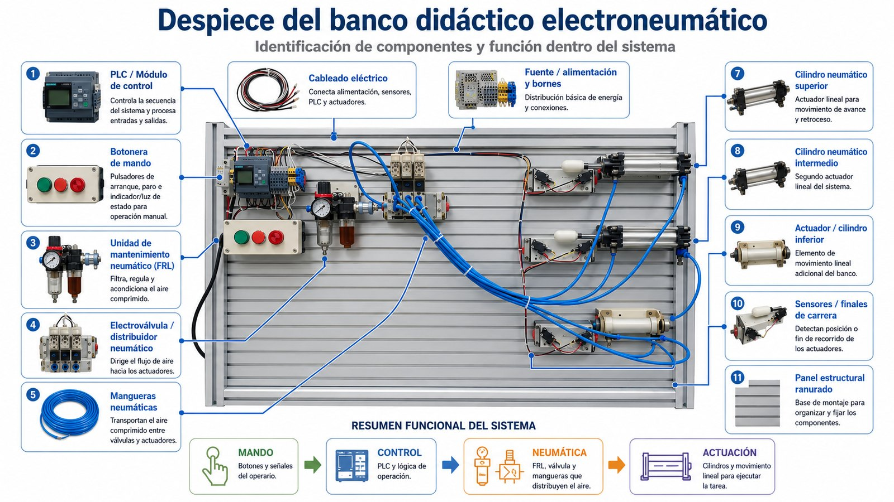
La evaluación integró mediciones cuantitativas, observaciones cualitativas y revisión de productos técnicos.
| Equipo | Foco técnico | Aporte a la BPD | Resultado |
|---|---|---|---|
| Ángel - Poveda | Diagnóstico técnico e ingeniería inversa del banco. | Reconstrucción del funcionamiento original y potencial pedagógico para PLC y electroneumática. | 3,8 |
| Botero - Buendía - Martínez | Diagnóstico técnico destacado y mapa funcional mejorado. | Trabajo más equilibrado en claridad visual, seguridad y trazabilidad entre evidencia física y propuesta funcional. | 4,5 destacado |
| Román - Cañón | Reconstrucción virtual del proceso en CADe_SIMU. | Caso de simulación funcional, seguro y verificable antes de una intervención física. | 4,0 |
| Kewin - Nicolás | Rediseño del banco para prácticas modernas de PLC. | Proyección hacia una plataforma vigente con HMI, SCADA, IIoT y conectividad. | 4,0 |
| Albert - Mariana | Gemelo digital didáctico y seguridad fail-safe. | Visión de simulación dinámica, depuración lógica, seguridad y preparación para monitoreo en la nube. | 3,7 |
Se integraron las imágenes base del banco, el docente, la sede y la secuencia visual de presentación. Las evidencias gráficas específicas de resultados pueden añadirse después en esta misma galería o en fichas por equipo.
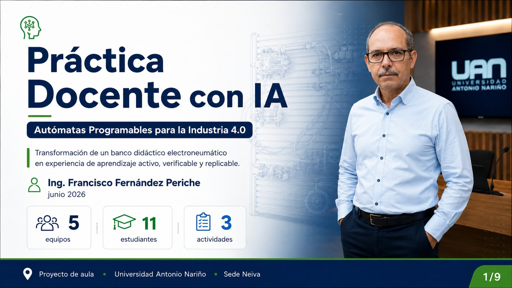
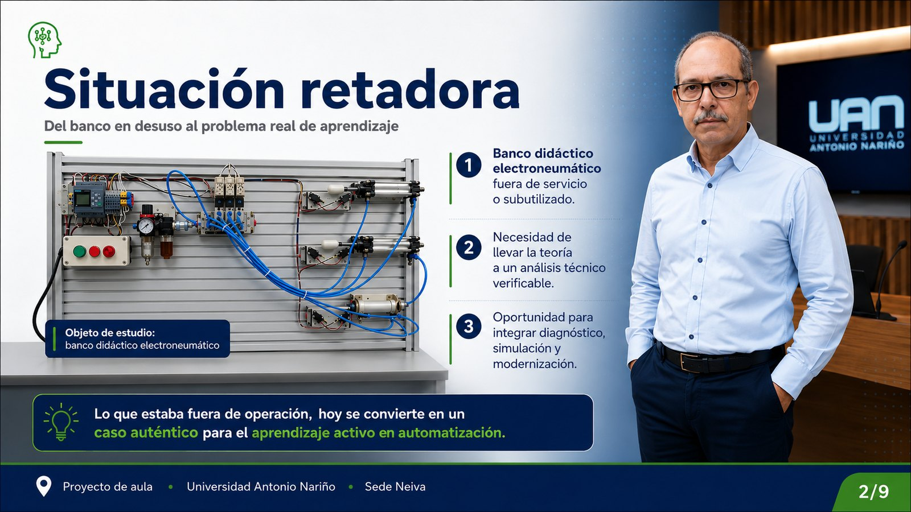
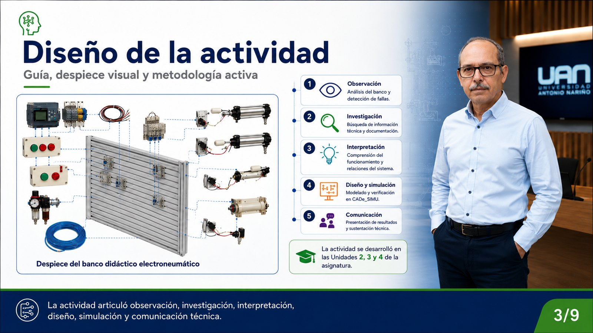
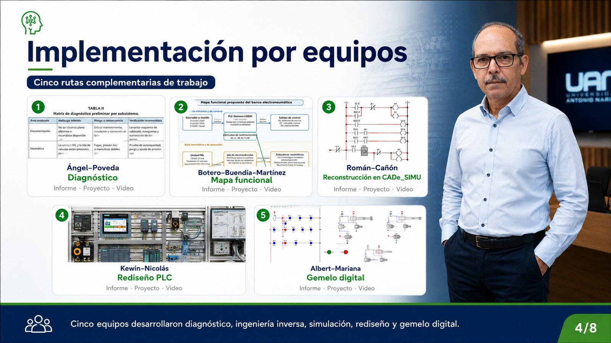
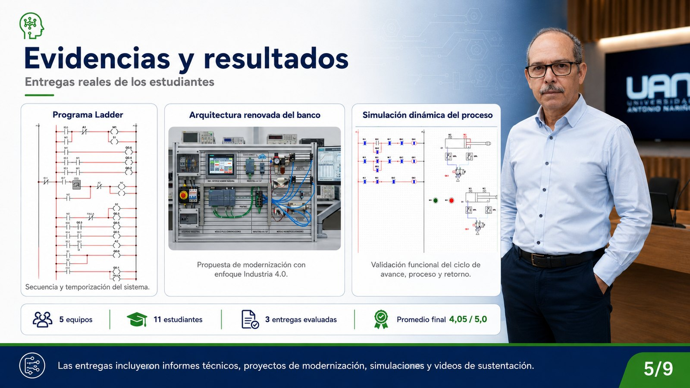
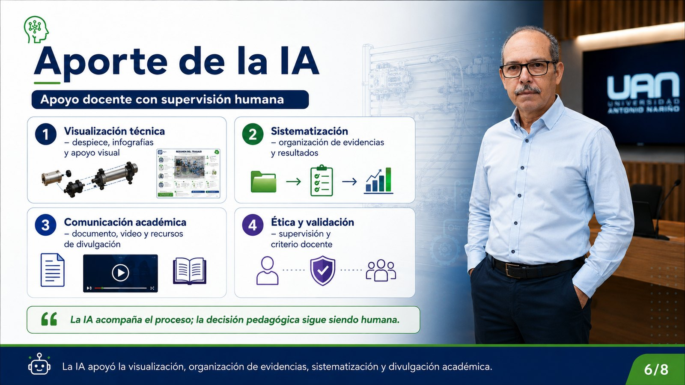
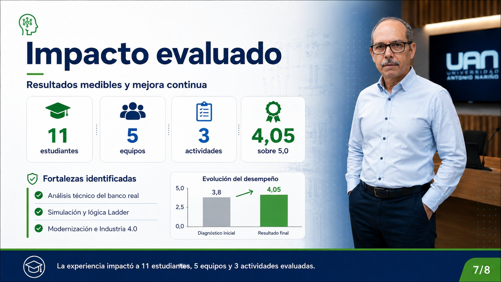
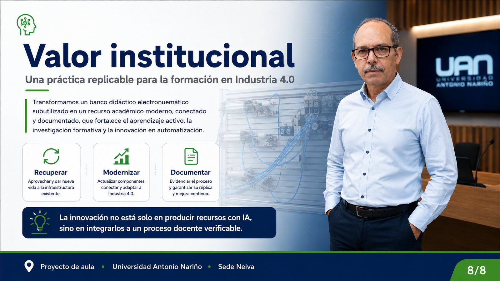
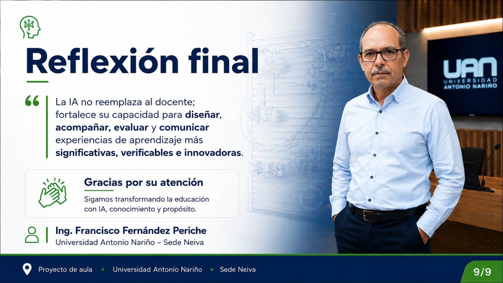
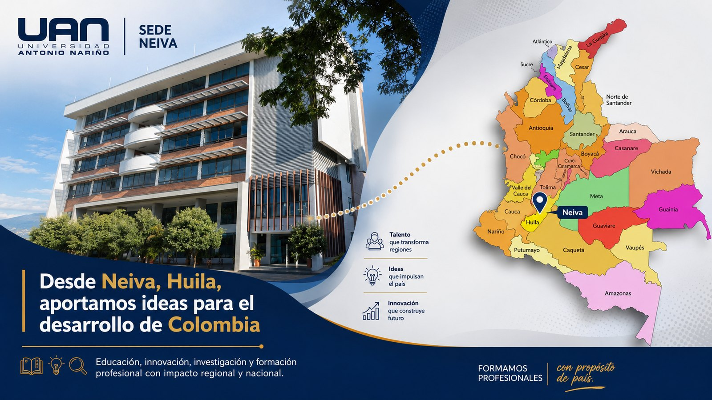
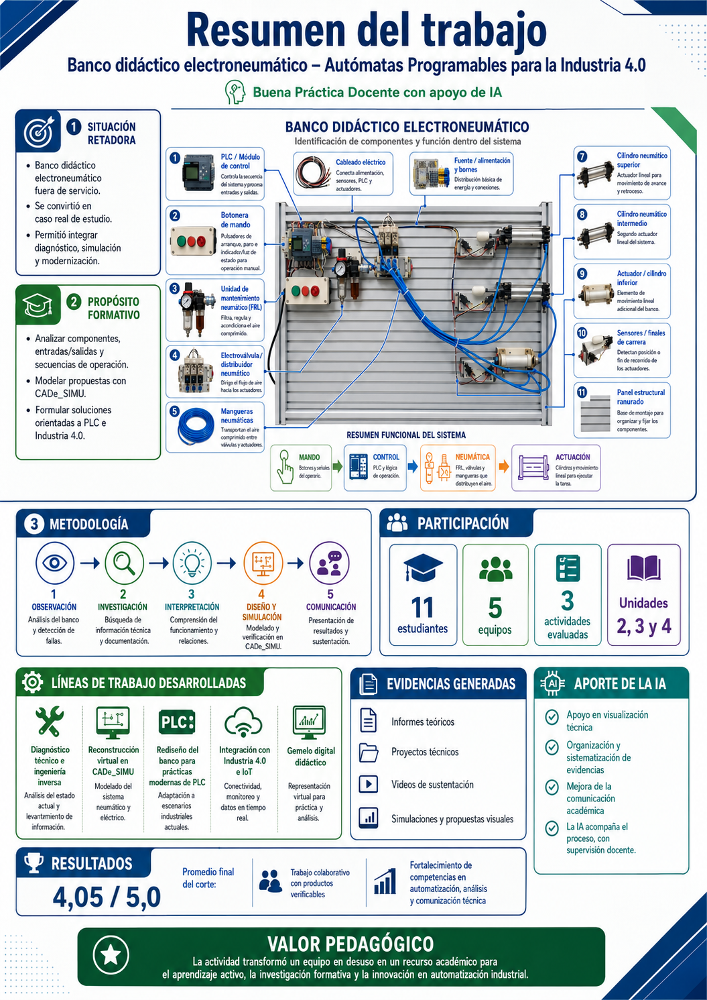
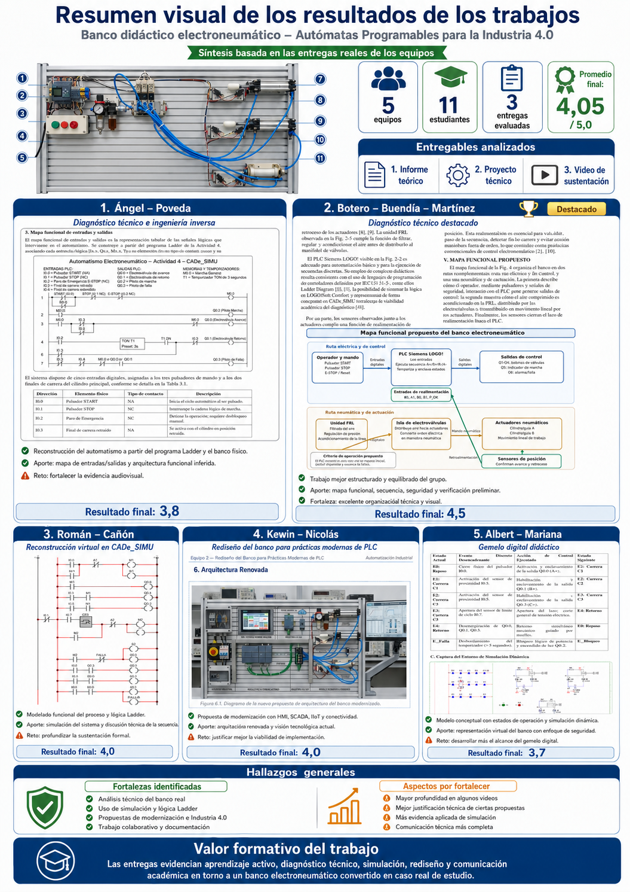
La IA fortaleció visualización, organización y comunicación, pero las decisiones técnicas exigieron observación, simulación, referentes y validación docente.
Imagen de despiece, apoyos visuales, infografías y recursos de análisis.
Guías, líneas de trabajo, rúbricas, resultados y observaciones por equipo.
Mejora de informes, presentaciones, videos y socialización de resultados.
No se aceptaron respuestas genéricas: toda afirmación debía ser verificable y coherente.
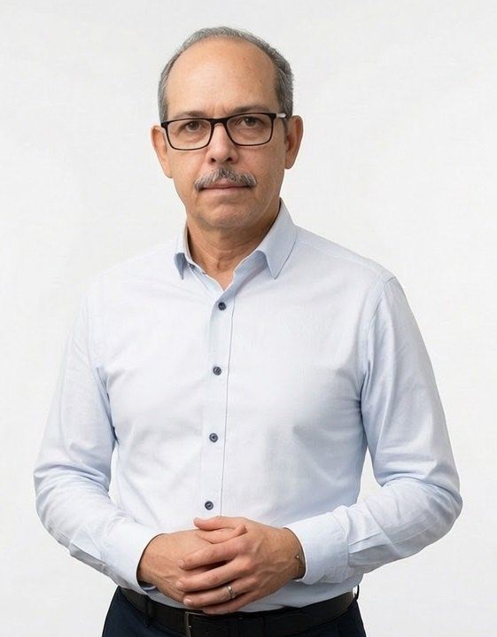
La propuesta conserva un enfoque humano: la IA acompaña la visualización, organización y comunicación, mientras la decisión pedagógica y la validación técnica siguen siendo responsabilidad docente.
La IA no reemplaza al docente; fortalece su capacidad para diseñar, acompañar, evaluar y comunicar experiencias de aprendizaje más significativas, verificables e innovadoras.
El sitio queda preparado para la postulación, repositorio, video del evento y carpeta de evidencias.
Documento convertido a PDF para descarga directa desde el micrositio.
Descargar PDF →Carpeta con Actividad 01 Teóricos, Actividad 02 Proyectos y Actividad 03 Videos.
Abrir Drive →Presentación en la celebración de 50 años UAN: Usos de la IA en las Aulas de Ingeniería.
Ver video →Adaptable a Automatización, Control, Microcontroladores, Instrumentación y Mantenimiento.
Solicitar adaptación →{kind=link}
{kind=link}
{kind=link}
{kind=link}
{kind=link}
{kind=link}
{kind=link}
{kind=link}
{kind=link}
{kind=link}
{kind=link}
{kind=link}
{kind=link}